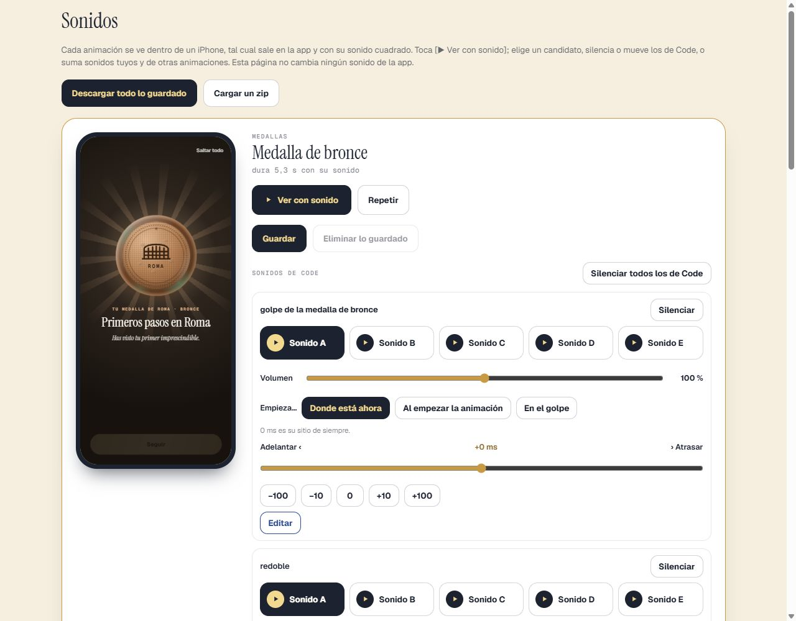
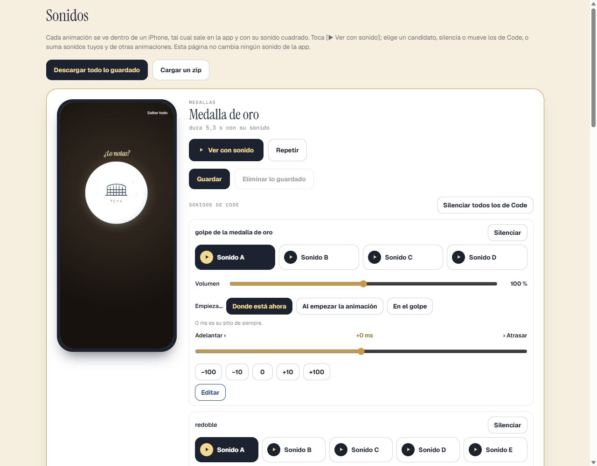
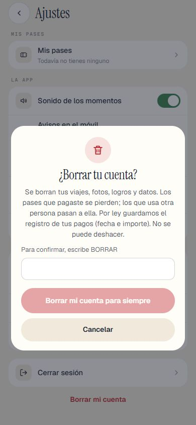
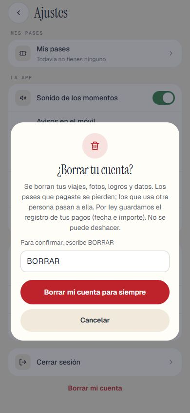
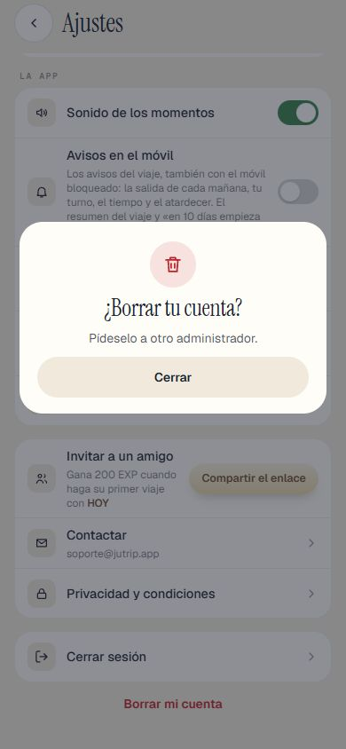

pruebaV37_textos (13 comprobaciones) recorre src, server, shared, api, data/logros y data/pase y falla si «sello» aparece fuera de su lista blanca explícita (29 textos del pasaporte en 14 archivos, cada uno con su motivo).sello es la medalla; en los textos, siempre «medalla».

Textos leídos en pantalla: Saltar todo ROMA TU MEDALLA DE ROMA · BRONCE Primeros pasos en Roma Has visto tu primer imprescindible. Seguir
Saltar todo ROMA ROMA ¿Lo notas? TU MEDALLA DE ROMA · ORO Roma es casi tuya Seis imprescindibles de ocho. Seguir
sello_pasaporte (candidato A del clic): una vez al estampar. No suena al ver un sello ya estampado ([Ver mi sello]), ni en la hoja de ejemplo del estudio, ni con «reducir movimiento» (sin golpe, sin sonido), ni con el sonido apagado en Ajustes.pruebaV37_sello: 18 comprobaciones. Ojo: el reloj exacto (clic a 2,05 s) no se pudo medir en Chrome sin pantalla; falta oírlo en un iPhone de verdad.originalRouteoriginalRoute (la de «Volver a mi ruta original») ya no sube, ni baja, ni se guarda en la caché de HOY. Se guarda UNA vez, aparte, solo en ese móvil (localStorage, hasta 8 viajes, se borra al cerrar sesión). La varita sigue funcionando. Informe completo: docs/dias/V37_ORIGINALROUTE.md (dónde se usaba cada cosa).docs/dias/LIMPIAR_ORIGINALROUTE.sql + COMPROBAR_LIMPIAR_ORIGINALROUTE.sql (SIN APLICAR; probados en PGlite con las migraciones reales).pruebaV37_viaje: 40 comprobaciones (viaje nuevo sin copia en la petición, viejo abierto/editado/guardado, peso ≤ 55 %, huella, SQL, tope de 8 copias).| Viaje | Antes | Después | Queda |
|---|---|---|---|
| Lanzarote (el real de Eric) | 96.883 B (94,6 KB) | 49.278 B (48,1 KB) | 50,9 % |
| Roma (la ruta de prueba) | 161.666 B (157,9 KB) | 81.640 B (79,7 KB) | 50,5 % |
| Lanzarote: cuerpo real del guardado | 96.883 B | 49.254 B | 50,8 % |
0092_route_original.sql (SIN APLICAR; docs/dias/COMPROBAR_0092.sql): columna trips.route_original y un disparador que no deja pisar la original mientras la ruta sea la misma.pruebaV37b: 26 comprobaciones; pruebaV37_viaje ahora 44.DELETE /api/cuenta exige { confirmar: "BORRAR" }; 403 si la sesión es anónima («Entra con tu cuenta…») o es de administrador («Pídeselo a otro administrador»). Hace lo mismo que empezar_de_cero (con respaldo a preparar_borrado si la función faltara), borra los archivos (fotos y foto de perfil) y la cuenta de Supabase Auth. Se queda pagos_registro (fecha e importe).pruebaV37_cuenta (PGlite con todas las migraciones + el servidor de cuentas de verdad): 25 comprobaciones. Sin BORRAR no se borra nada; anónima y administrador, 403; con BORRAR desaparece su acceso, viajes, logros y archivos; el pase que pagó pasa a Beto; pagos_registro se queda; lo de otra persona no se toca. También pruebaCuentas1 (314) y pruebaCuentas3 (473), adaptadas.


CIVITATIS_API_USER y CIVITATIS_API_PASSWORD, en server/civitatis/cliente.js; el servidor la usa en server/index.js y los scripts civitatis*.mjs). No se ha quitado nada. No se ha abierto ningún .env* (se averiguó buscando en el código).empezar_de_cero (hoy la 0091) se encuentra buscando la migración con el número más alto que la define; regla «los agentes nunca abren ni leen .env*»; regla «sello/medalla»; borrar la cuenta.pruebaV36_cliente pasa con el Vite normal (28). Con el Vite «estable» (Supabase de mentira) no pasa, porque necesita el contador real de peticiones: se corre con el Vite normal en 5173.| Prueba | Por qué fallaba | Qué se hizo |
|---|---|---|
pruebaTanda6z6b (1) | Buscaba el «+» en PerfilSheet; desde la V31 vive en BotonMas.tsx | Prueba al día |
pruebaFase6y4_perfil (3) | Pedía el «+» de 64 px; la V31 lo dejó en 72 px (diseño «Boton Mas») | Prueba al día |
pruebaTanda10S2 (1) | Pedía <PiezaSegura nombre="…"> sin atributos; MomentosHost lleva reintentable desde la V25 | Prueba al día |
pruebaTanda10N10_avisos (3) | Desde el arreglo del 6-nov la franja de avisos solo sale con la ruta abierta; la prueba no la abría | La prueba abre la ruta, como la persona |
pruebaV2Hoy (2) | Contaba el botón flotante «Cuéntanos» (V28b, 19-nov) como flotante de HOY | La regla cuenta los de HOY (cámara y logros) |
pruebaTandaHOY1_B y _C | «Not found»: Lanzarote está oculto salvo para administradores (el guardián del servidor, DESTINOS_OCULTOS) | Pasan con el api-server con Lanzarote visible (0 fallos: 195 y 124). Sin tocar la prueba; el api-server se ha vuelto a dejar normal |
pruebaV25 (1) | Dos filas de pestañas del panel (V35A) con overflowX sin overflowY | Arreglo real en comun.tsx (filas quietas en vertical) |
pruebaTandaLZ2b1_B (1) | Buscaba el nombre viejo de una variable de ExplorePanel | Prueba al día |
No se han probado en un commit anterior (no se puede apartar el trabajo en curso sin riesgo): el motivo de cada una se ha comprobado leyendo el código, que V37 no toca en esos puntos. Las de agentes que fallaron en medio de la tanda (pruebaTanda10F, pruebaTanda10S, pruebaTanda10N11_c, pruebaV10, pruebaV14) pasan en 0 en la ejecución final con Vite reiniciado.
CIVITATIS_API_USER y CIVITATIS_API_PASSWORD (si dejas de usar los scripts civitatis*.mjs y la API está apagada, CIVITATIS_API_ACTIVA sin true, la contraseña podría quitarse de .env.local; en Vercel, solo si algún día apagas la API de Civitatis).docs/dias/LIMPIAR_ORIGINALROUTE.sql (solo lee), mira cuántos viajes la llevan y, si te vale, el PASO 2 (repetible); después COMPROBAR_LIMPIAR_ORIGINALROUTE.sql (una fila, todo en true). Sin él, la app funciona igual y cada viaje se limpia solo al guardarse. Si un móvil con la app vieja guarda después, repite el PASO 2.supabase/migrations/0092_route_original.sql y luego docs/dias/COMPROBAR_0092.sql: una fila con todo en true). Hasta entonces la app va igual y la original solo está en el móvil donde se creó. Para los viajes que ya existen, la original de verdad solo está en el móvil donde se creó la ruta: sube a la nube con su próximo guardado desde ese móvil.